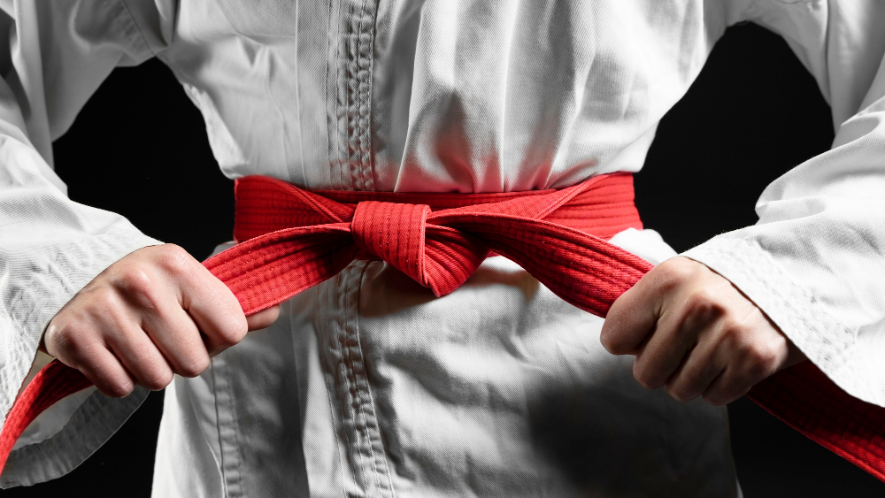

Como Praticar e Celebrar Hoje

Os caminhos e benefícios da arte marcial moderna.
Hoje, o Karatê é praticado por milhões de pessoas e está dividido em grandes estilos tradicionais reconhecidos mundialmente, como o Shotokan (focado em bases fortes e golpes longos), o Goju-Ryu (que une movimentos suaves e duros), o Shito-Ryu e o Wado-Ryu. Independentemente da escola escolhida, a prática regular traz inúmeros benefícios para a saúde, incluindo melhora na coordenação motora, flexibilidade, aumento do foco mental e alívio do estresse diário.
Como Comemorar o Dia do Karatê
- Visite um Dojo: Conheça uma academia local e experimente uma aula experimental.
- Treine um Kata: Pratique uma sequência de movimentos focando na perfeição técnica e na respiração.
- Compartilhe o Conhecimento: Divulgue a filosofia de não-agressão da arte marcial com amigos e familiares.